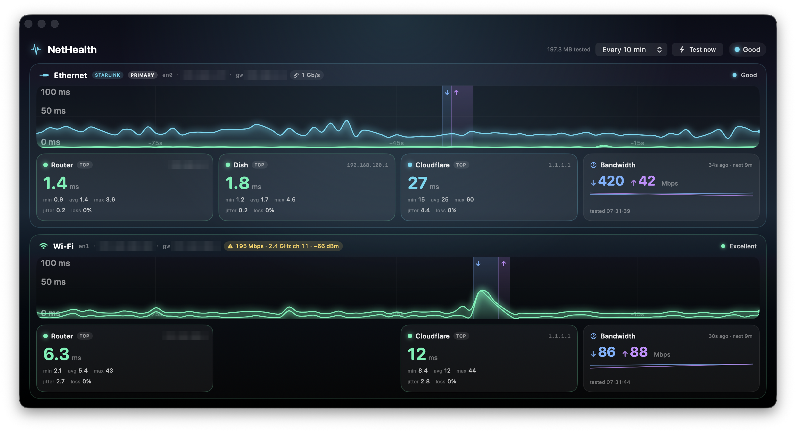

A native macOS monitor for every network connection the Mac has: live latency per link drawn as flowing aurora ribbons, periodic download/upload tests, and the local Wi-Fi or Ethernet link rate. It shows at a glance which link is slow, and why.

Interactive diagrams: connection discovery, interface-pinned probes, the bandwidth test, and the time-scrolling renderer.
How it was built, prompt by prompt, including the dead ends and what each one taught.
SwiftUI, macOS 14+, no dependencies. Build it with Xcode or ./run-macos.sh.